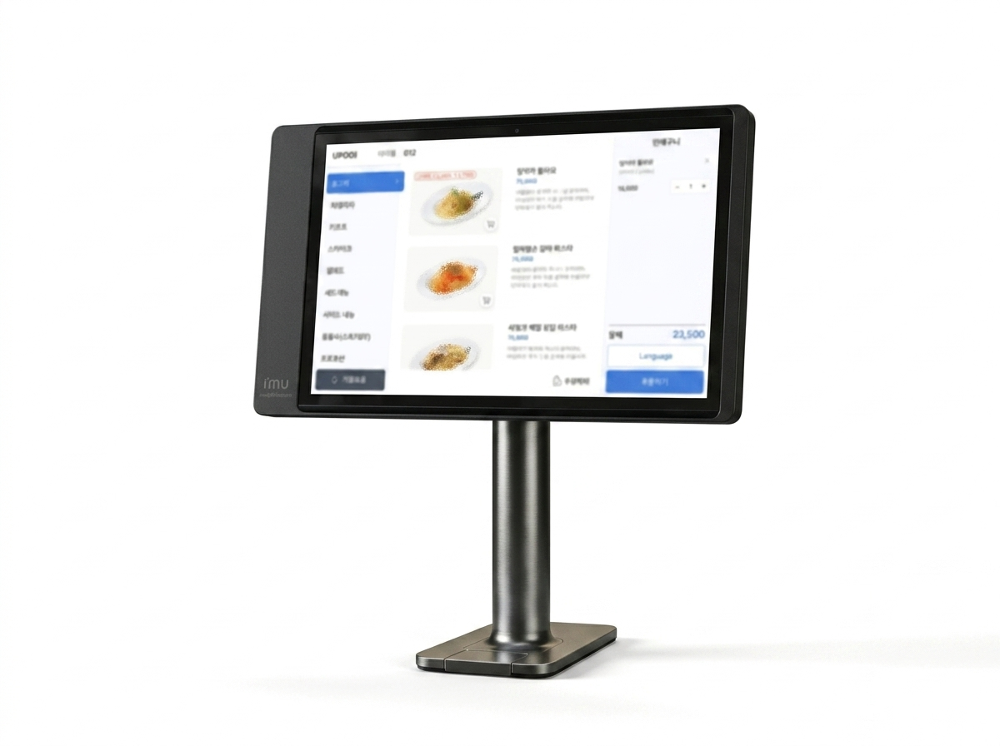
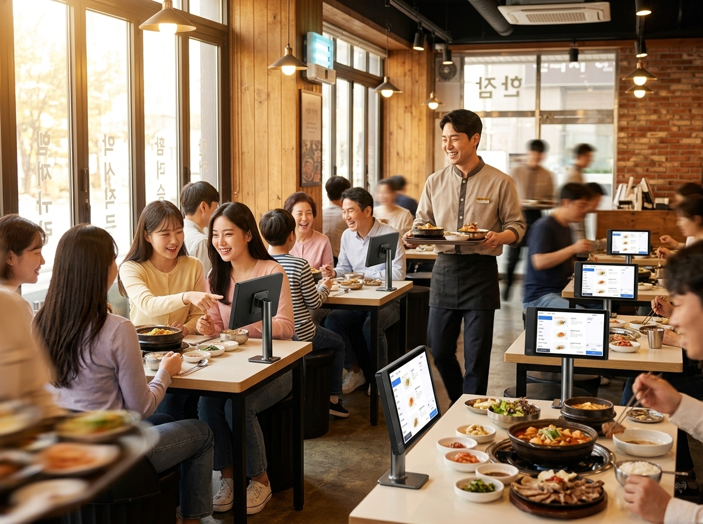
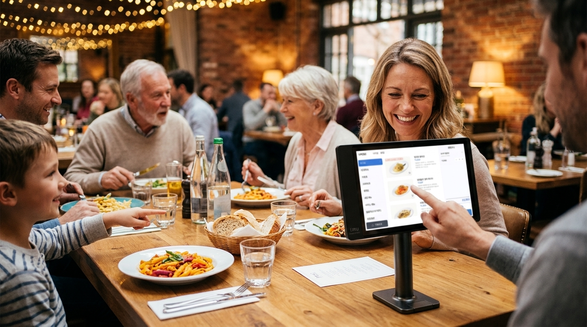

원고 「테이블오더, 일손 부족한 식당의 현실적인 해답」(2,300자). 폴더: 업로드자료\2026\08\8월2일(토)_프리미엄필름11호_테이블오더 — 검수 후 네이버 예약발행 부탁드립니다.
| 구성 | 라따뚜이식 마법의 주방(요리사·김·구리냄비) → 「주문은 즐겁게, 주방은 빠르게」 → 테이블오더 히어로 → 온 가족이 직접 주문 → 「테이블오더」 |
| 메시지 | 손님이 직접 주문, 주방은 즉시 접수 — 일손 부족의 현실적 해답 |
| 타겟 | 홀 넓은 식당·주점·카페, 피크타임 주문 몰림, 직원 채용난 매장 |
누리네트웍스 내부 검수용 · 검색 비노출 · 신규 6편(7/27~8/2) 제작 완료